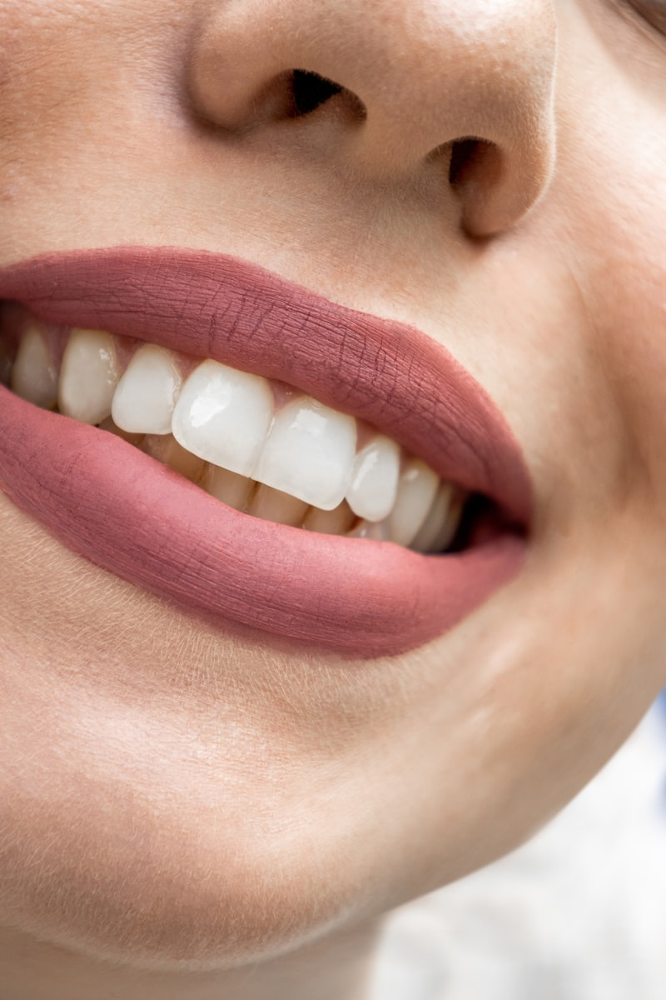

Tratamientos de conducto de precisión, con la confianza que tu sonrisa merece
Endodoncia especializada con microscopio operatorio en San Francisco de Macorís. Diagnóstico preciso, tratamiento mínimamente invasivo y seguimiento cercano en cada consulta.
"Cada tratamiento de conducto merece la precisión que solo da el microscopio operatorio."
Dr. Iván Gilberto Polanco Grullón
Odontólogo especializado en endodoncia, con Magíster en Endodoncia y Microscopía. Su práctica se enfoca en tratamientos de conducto de precisión, apoyado en el uso de microscopio operatorio para diagnósticos más exactos y procedimientos mínimamente invasivos.
Atiende en su consultorio en San Francisco de Macorís, con un enfoque centrado en la comodidad del paciente y en explicar cada paso del tratamiento con claridad.
Endodoncia especializada, paso a paso
Lista sugerida de servicios — a confirmar y ajustar redacción final con el doctor (ver disenoweb.md §7).
Endodoncia convencional
Tratamiento de conducto para eliminar la infección y preservar la pieza dental.
Retratamiento de endodoncia
Corrección de tratamientos previos que no sanaron correctamente.
Endodoncia microscópica
Precisión adicional con microscopio operatorio en casos complejos.
Cirugía endodóntica / apicectomía
Intervención quirúrgica cuando el retratamiento no es suficiente.
Manejo de traumatismos dentales
Atención de urgencia ante golpes o lesiones que afectan el diente.
Diagnóstico y manejo de dolor dental
Evaluación precisa del origen del dolor y plan de tratamiento.
Consulta y evaluación general
Primera visita para valorar tu caso y definir el mejor tratamiento.

Foto ilustrativa de stockEspecialización y tecnología al servicio de tu tratamiento
Un consultorio enfocado exclusivamente en endodoncia, con tecnología de precisión y un trato cercano en cada etapa del tratamiento.
-
Uso de microscopía
Mayor precisión diagnóstica y de tratamiento en cada caso.
-
Especialización en endodoncia
Enfoque exclusivo, no odontología general.
-
Tecnología actualizada
Equipamiento que apoya diagnósticos y tratamientos más exactos.
Cada caso se evalúa con el mismo nivel de detalle
Estudios de imagen y revisión clínica cuidadosa antes de definir el plan de tratamiento, para que sepas exactamente qué esperar.
Agendar evaluaciónTu primera cita, paso a paso
Agenda tu cita
Por teléfono, correo o el formulario de contacto del sitio.
Evaluación y diagnóstico
Revisión clínica de tu caso, con estudios previos si los tienes.
Plan de tratamiento
Explicación clara del procedimiento recomendado y sus pasos.
Tratamiento y seguimiento
Procedimiento con microscopio operatorio y control posterior.
Opiniones de pacientes
Estamos recopilando reseñas reales de pacientes (por ejemplo, de Google) para mostrarlas aquí. No se muestran testimonios inventados.
Todo lo que necesitas saber
Respuestas generales sobre endodoncia. Para dudas específicas de tu caso, agenda una consulta.
Gracias a la anestesia local, el procedimiento en sí es prácticamente indoloro. Es normal sentir algo de sensibilidad en los días posteriores, que suele controlarse con analgésicos comunes.
El microscopio operatorio permite una visualización ampliada de los conductos radiculares, lo que ayuda a un diagnóstico y tratamiento más precisos, especialmente en casos complejos o retratamientos.
No es indispensable. Puedes agendar tu consulta de evaluación directamente; si ya tienes una remisión o estudios previos, tráelos para agilizar el diagnóstico.
Varía según la complejidad del caso. Algunos tratamientos se completan en una sola sesión y otros requieren visitas adicionales — esto se define en tu evaluación inicial.
Si tienes radiografías o estudios dentales recientes, tráelos. No son obligatorios: si no los tienes, se pueden indicar durante la evaluación.
Agenda tu cita hoy mismo
Elige día y horario en línea, o contáctanos directamente por teléfono o correo.
- Teléfono809-244-5070 · 829-939-6232
- Correodr.ivanpolanco059@gmail.com
- DirecciónC. el Carmen #29, San Francisco de Macorís, R.D.
- HorarioPendiente confirmar con el doctor
Reserva tu horario en línea
Consulta la disponibilidad real y confirma tu cita al instante — recibirás la confirmación por correo y un recordatorio 48 horas antes.
Ver horarios disponibles¿Prefieres coordinar por teléfono? Llámanos al 809-244-5070.